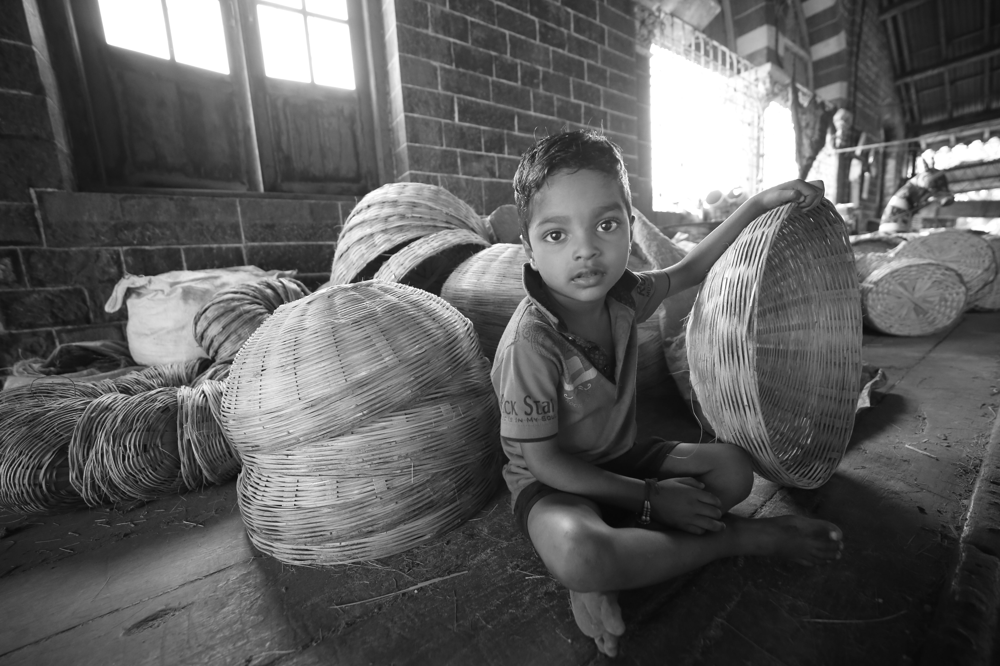

SOLEDAD
La pandemia de la soledad.
Conectados como nunca pero desde el mundo virtual.
30 Agosto 2026 | 8 min de lecturaNUEVO EN NODO
SOLEDAD
Conectados como nunca pero desde el mundo virtual.
30 Agosto 2026 | 8 min de lecturaALGORITMOS
Cuestiona el origen de tus ideas, de dónde vienen.
30 Agosto 2026 | 9 min de lecturaREDES SOCIALES
Reorganizan nuestro deseo.
30 Agosto 2026 | 8 min de lecturaMATERIALISMO

Economía mundial.
30 Agosto 2026 | 10 min de lectura